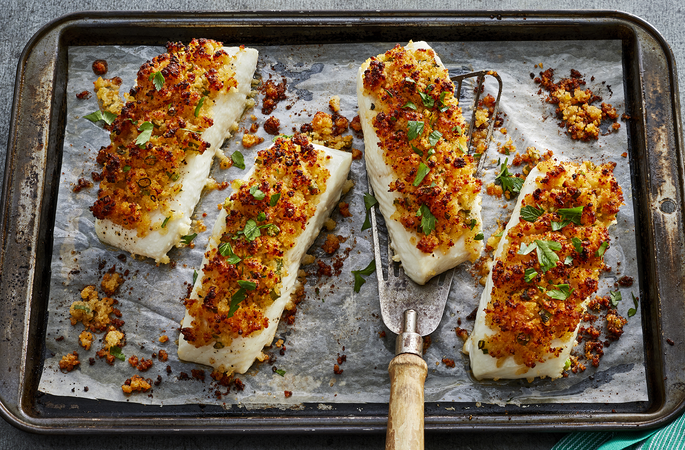

Parmesan crusted baked fish

A great recipe for fish lovers!
Parmesan, mayonnaise and breadcrumbs may seen an unlikely pairing for fish, but they create a flavor-packed crust that helps keep the fish deliciously moist while it bakes. Goes well with sautéed spinach! Tilapia, catfish, whitefish, striped bass, haddock or scrod are good choices for the fish. This recipe also works well with chicken.
Ingredients
- ¾ cup Japanese panko breadcrumbs
- ¾ cup Parmesan cheese finely grated
- 3 tablespoons unsalted butter room temperature
- 3 tablespoons mayonnaise
- 3 green onions, green tops only thinly sliced
- 1 teaspoon Worchestershire sauce
- ½ teaspoon Tabasco or other hot pepper sauce
- 1½ tablespoons lemon juice freshly squeezed (approx. 1/2 lemon)
- salt and pepper to taste
- 4 white fish fillets approx. 6 oz; 1/2 to 3/4 inch thick
- 2 tablespoons fresh flat-leaf parsely finely chopped
Steps
- Preheat oven to 425°. Lightly butter a baking dish or individual grain dishes for the fillets.
- In medium bowl, mix together the cheese, breadcrumbs, butter, mayonnaise, green onions, Worcestershire sauce, Tabasco and lemon juice; season to taste with salt and pepper. Set aside until needed.
- Pat the fish fillets completely dry with paper towels (removing the moisture ensures they won't get mushy while baking); season generously with salt and pepper. Arrange the fish in a lightly buttered baking dish or individual gratin dishes.
- Spread about 3 tablespoons of the cheese mixture over each fillet.
- Place in preheated oven and bake until bubbly and almost cooked through, about 8 to 10 minutes. Temperature should be approximately 125-130° when tested at thickest part of fillet with meat thermometer.
- Move fillets to broiler for 2 to 3 minutes to brown and crisp the tops. When done, the fish should flake easily with a fork.
- Remove from oven, garnish with fresh parsley and serve immediately.